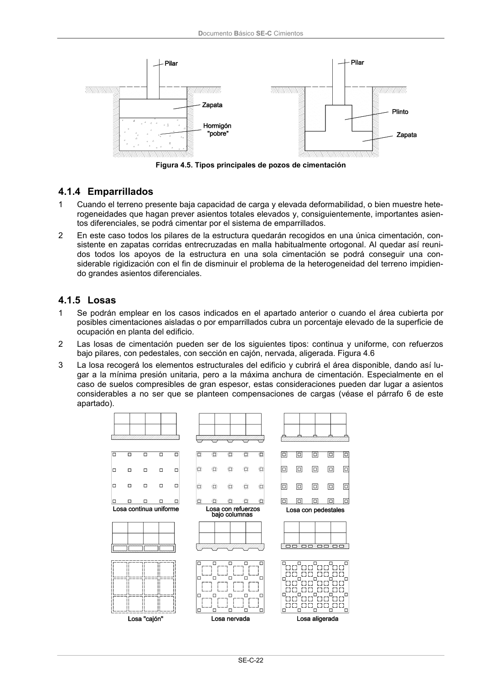

DB-SE-C Cimientos · edición 2019-12-20 · capa oficial
Documento DB-SE-C-oficial · SHA-256 del PDF a71133f4b0dca253e45ea3071c70f2a512354bcc5cd841bf89b1a502f567ac5e
Copia fiel del PDF fuente · Fuente oficial
Ficha de la disposición en la fuente oficial
Formatos: JSON del segmento · Markdown
4.1.4 Emparrillados 1 Cuando el terreno presente baja capacidad de carga y elevada deformabilidad, o bien muestre hete- rogeneidades que hagan prever asientos totales elevados y, consiguientemente, importantes asien- tos diferenciales, se podrá cimentar por el sistema de emparrillados. 2 En este caso todos los pilares de la estructura quedarán recogidos en una única cimentación, con- sistente en zapatas corridas entrecruzadas en malla habitualmente ortogonal. Al quedar así reuni- dos todos los apoyos de la estructura en una sola cimentación se podrá conseguir una con- siderable rigidización con el fin de disminuir el problema de la heterogeneidad del terreno impidien- do grandes asientos diferenciales.
